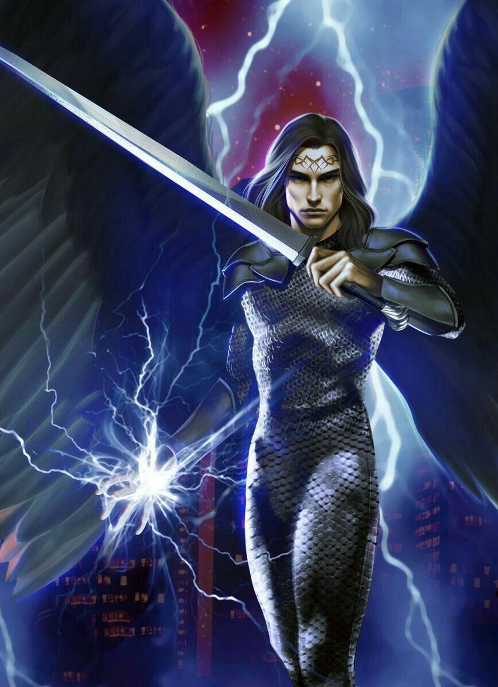
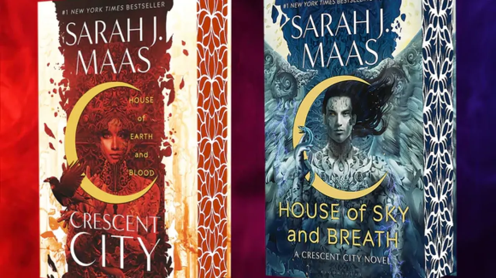
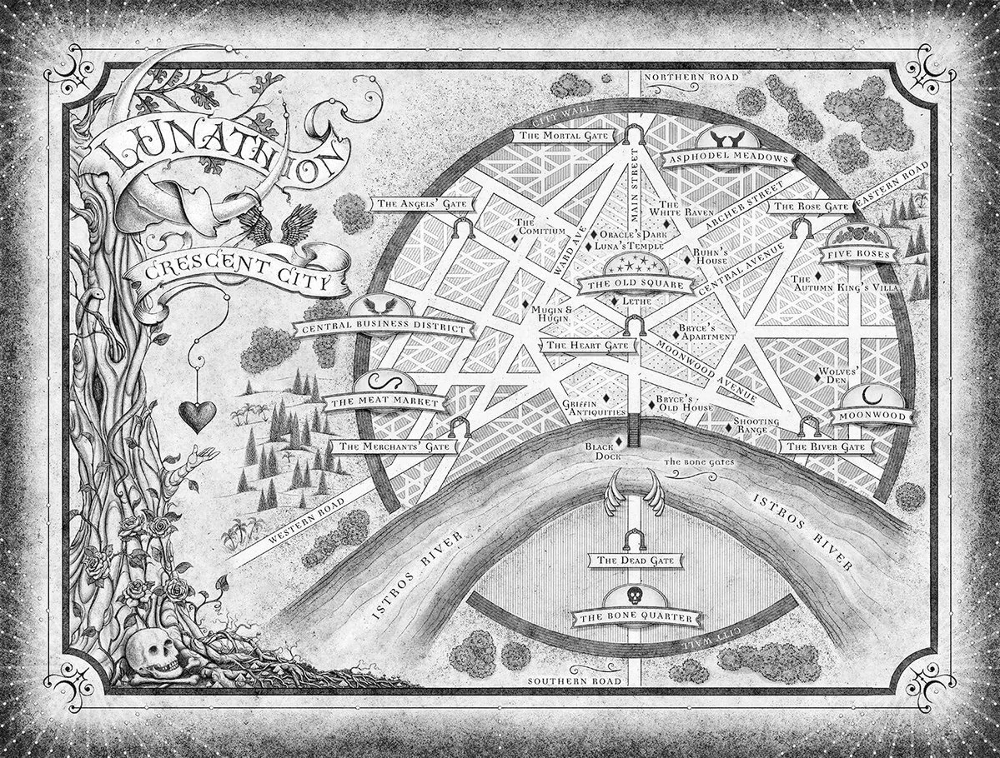

Crescent City - Föld és Vér Háza trilógia
- 1. - House of Earth and Blood - Föld és vér Háza
- 2. - House of Sky and Breath - Ég és Lélekzet Háza
A #1 New York Times bestsellerszerző Sarah J. Maas a Föld és vér
házával indítja útnak legújabb sikersorozatát, a Crescent Cityt: a
félig tündér, félig ember Bryce Quinlan történetével, aki bosszút
esküszik egy mágiával, veszéllyel és perzselő szenvedéllyel teli
modern fantasyvilágban.
A félig tündér, félig ember Bryce
Quinlan imádja az életét. Minden estét bulizással tölt, és eltökélte,
hogy kiélvezi mindazt, amit Lunathion - azaz Crescent City - nyújthat.
Csakhogy egy kegyetlen gyilkosság alapjaiban rendíti meg a várost, és
Bryce világa darabokra hullik. Két évvel később Bryce még mindig a
város legismertebb szórakozóhelyeit járja, immár a feledés reményében,
ám hirtelen folytatódnak a gyilkosságok. A hírhedt bukott angyalt,
Hunt Athalart megbízzák, hogy figyelje minden lépését, és Bryce rájön,
többé nem menekülhet a feledésbe. Bryce és Hunt igyekszik kideríteni
az igazságot - és feldolgozni saját múltjuk szörnyűségeit. A
megbolygatott szálak a város legsötétebb részein és a háborúban álló
kontinenseken keresztül egyenesen a pokol bugyraiba vezetnek, ahol az
évezredek óta szunnyadó erők most ébredezni kezdenek…
Hunt arrafelé fordult, amerre a királynő mutatott, felállt a szőr a nyakán. Mintha előre sejtette volna, mit fog látni. Merthogy az utcán Danika bőrdzsekijében, egyik kezében karddal, a másikban pisztollyal nem más futott, mint Bryce. Nem a veszély elől, hanem egyenesen felé. 821. oldal, 83. fejezet

– Mégis miért – kérdezte Bryce-tól – laksz te együtt Hunt Athalarral? – Kirakták a 33.-ból a fura divatérzéke miatt – válaszolta Bryce a croissant-on nyammogva. – Mondtam neki, hogy engem nem zavarnak az unalmas fekete göncei, és hagytam, hogy itt maradjon. Ember a szemét forgatta. Pont ugyanúgy, ahogy az imént Bryce. 605. oldal, 56. fejezet
Egyebként itt vannak a borítok, melyek igazi mesterművek, és megragadják a könyvek hangulatát:
És Lunathion, azaz Crescent City térképe:
